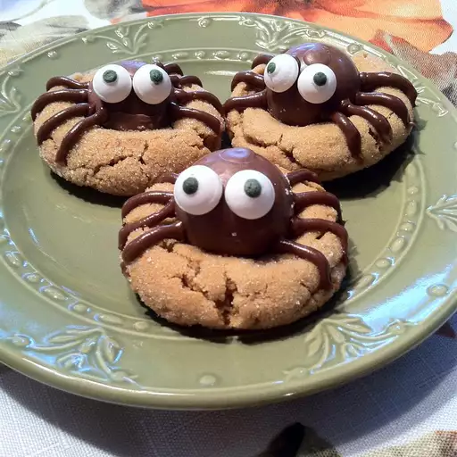

Peanut Butter Spider Cookies

ingredients
- ½ cup shortening
- ½ cup peanut butter
- ½ cup packed brown sugar
- ½ cup white sugar
- 1 large egg, beaten
- 1 teaspoon vanilla extract
- 1 ¾ cups all-purpose flour
- 1 teaspoon baking soda
- ½ teaspoon salt
- ¼ cup white sugar for rolling
- 24 chocolate candy spheres with smooth chocolate filling (such as Lindt Lindor Truffles), refrigerated until
cold
- 48 decorative candy eyeballs
- ½ cup prepared chocolate frosting
how to do it
-
Step 1
- Preheat the oven to 375 degrees F (190 degrees C). Line baking sheets with baking parchment.
-
Step 2
- Beat shortening, peanut butter, brown sugar, and 1/2 cup white sugar together with an electric mixer in a
large bowl until smooth. Beat egg into the creamy mixture until fully incorporated. Stir milk and vanilla
extract into the mixture until smooth.
-
Step 3
- Mix flour, baking soda, and salt together in a small bowl; add to peanut butter mixture in the large bowl
and stir until completely incorporated into a dough. Divide and shape dough into 48 balls.
-
Step 4
- Spread 1/4 cup white sugar into a wide, shallow bowl. Roll dough balls in sugar to coat and arrange about 2
inches apart onto prepared baking sheets.
-
Step 5
- Bake in preheated oven until golden brown, 10 to 12 minutes. Remove cookies from oven and quickly press a
dimple into the middle of each cookie using the blunt end of a wooden spoon. Cool cookies on sheets for 10
minutes before transferring to a wire cooling rack to cool completely.
-
Step 6
- Cut each chocolate sphere into two hemispheres. Put one piece atop each cookie with the rounded side facing
upwards.
-
Step 7
- Spoon frosting into a pastry bag with a small round tip or a plastic freezer bag with one end snipped off.
Dab a small amount of frosting onto the back of each candy eyeball and stick two onto each chocolate candy to
resemble eyes. Then pipe frosting in four thin lines, starting at the base of the candy, on each side atop the
cookie to resemble spider legs.
-
Step 8
-
Let frosting harden at room temperature, about 30 minutes. Store cookies in an airtight container.